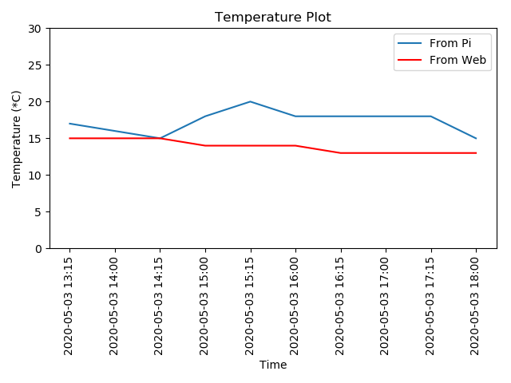
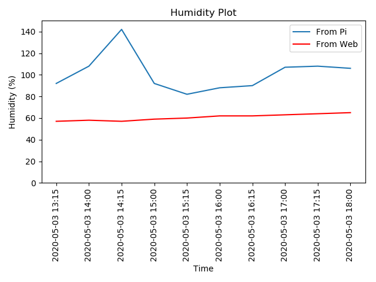
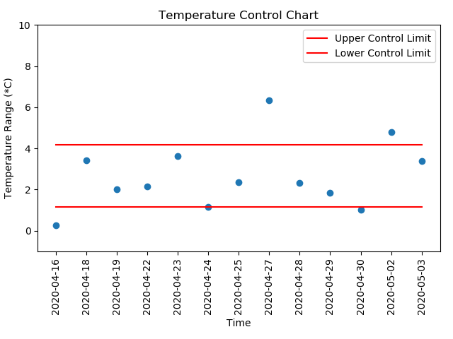
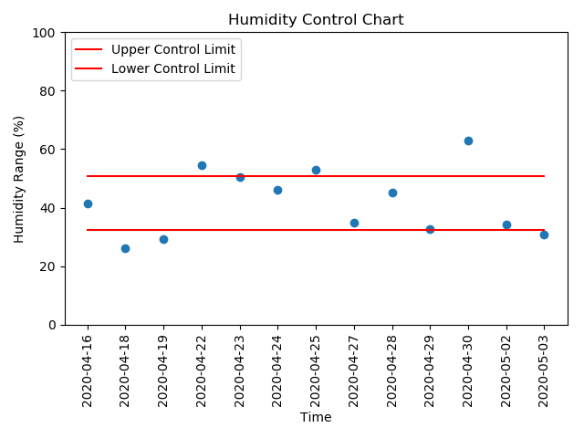

Temperature and Humidity Tracker
About
Project uses temperature and humidity recorded by DHT11 sensor via Raspberry Pi. This data is then compared with results from the website. Data is recorded in Ascot Vale, VIC 3032, Australia
Methods
The project collects temperature and humidity data from DHT11 sensor with Raspberry Pi.

Temperature and humidity data is also obtained from website for comparision purpose. These data is obtained via BeautifulSoup. Data is plotted and pushed to github server. The procedure is automated via crontab on Raspberry Pi.
Results
 Quality Control
The method for controlling the quality is adapted from Statistical Process Control: Control chart for variables. The difference between is calculated. Then upper and lower control limit are calculated. Data falls out of the control limit are considered to be the result of some assignable causes. And it is responsible for manager to take action about them.
 